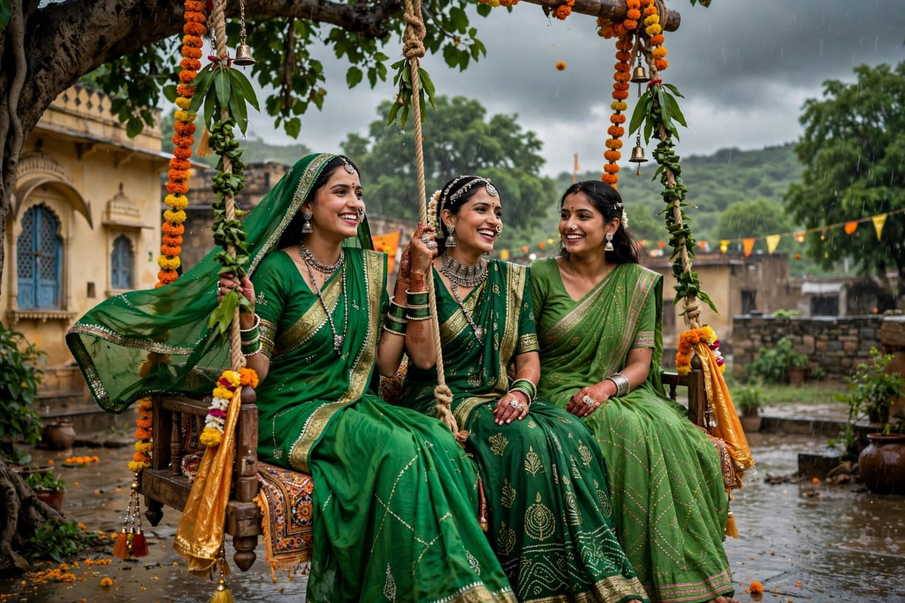
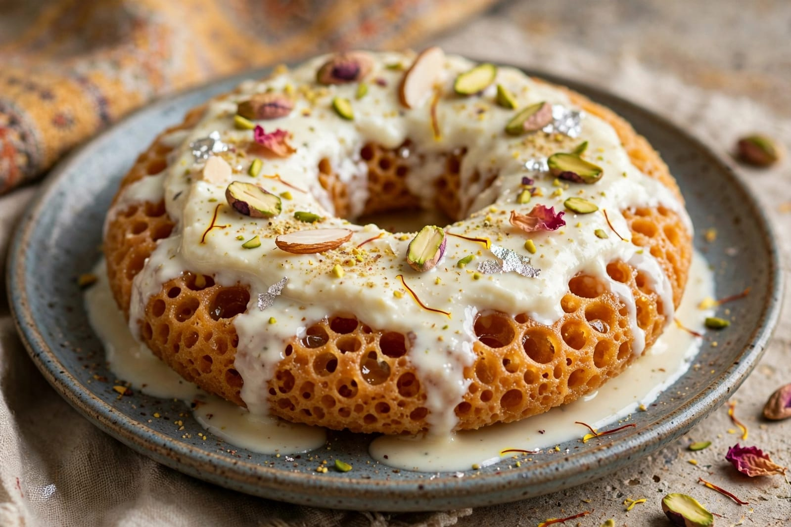
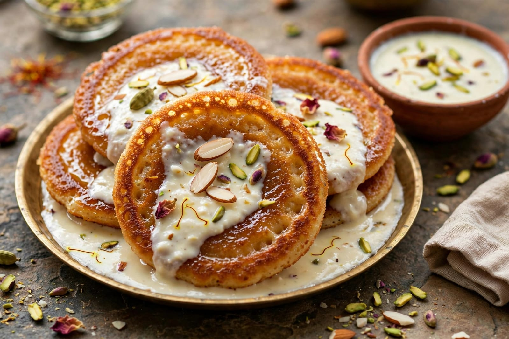
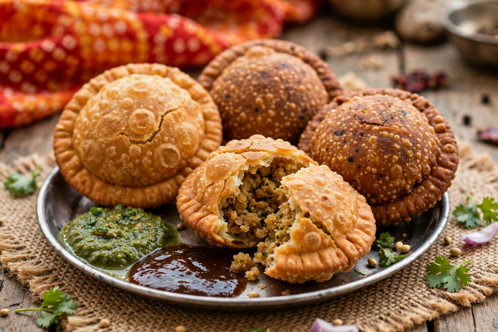

About Teej
Teej is a traditional Hindu festival celebrated mainly in parts of North and Western India. It is associated with the monsoon season and is especially important in Rajasthan, Haryana, Punjab, Uttar Pradesh, Bihar and other regions. The festival is celebrated in different forms, including Hariyali Teej, Kajari Teej and Hartalika Teej.
During Teej, women often wear colourful traditional clothes, decorate their hands with mehendi and take part in cultural and religious activities. Swings are decorated with flowers, and women enjoy singing traditional songs and spending time with family and friends. The festival creates a joyful atmosphere during the rainy season.
Teej is also connected with the worship of Goddess Parvati and Lord Shiva. Traditional prayers and rituals are performed during the festival. In many communities, Teej represents devotion, family traditions and the celebration of the arrival of the monsoon.
Special Foods

Ghevar
A traditional Rajasthani sweet commonly enjoyed during Teej.

Malpua
A sweet pancake prepared especially for festive occasions.

Kachori
A crispy and flavourful snack enjoyed during celebrations.